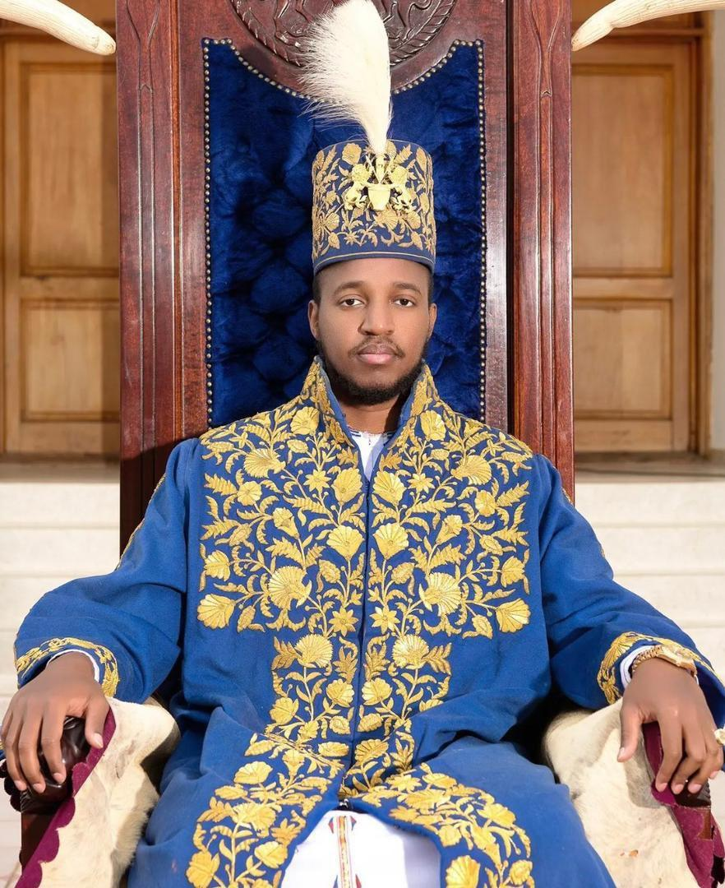

King Oyo Nyimba Kabamba Iguru Rukidi IV
A Remarkable Journey
King Oyo Nyimba Kabamba Iguru Rukidi IV was born on April 16, 1992, in Uganda. He was the son of King Patrick David Matthew Kaboyo Olimi III and Queen Mother Best Kemigisa.
On September 12, 1995, at only three years old, Oyo was enthroned as the Omukama of Tooro following the death of his father. His childhood reign was guided by regents while he grew into his responsibilities as a traditional leader.
In April 2010, after reaching the age of 18, King Oyo assumed full operational control of the Tooro Kingdom. During his years of leadership, he became involved in initiatives connected to youth development, education, agriculture, health and cultural preservation.
King Oyo died on August 27, 2026, at the age of 34. His nearly 31 years as Omukama made his life closely connected with the cultural and social history of modern Tooro.
Key Moments
Born
Oyo Nyimba Kabamba Iguru Rukidi IV was born on April 16, 1992, in Uganda.
Enthroned as Omukama
At the age of three, Oyo became the Omukama of Tooro following the death of his father.
Assumed Full Leadership
After reaching the age of 18, King Oyo took full operational control of the Tooro Kingdom.
Youth Health Advocacy
King Oyo was designated by UNAIDS as a champion among young people in Eastern and Southern Africa in the fight against HIV and AIDS.
Championing Youth Leadership
At the first Tooro Kingdom Annual Youth Conference, King Oyo encouraged young people to embrace discipline, integrity and self-determination.
Remembered as a Cultural Leader
King Oyo died on August 27, 2026, aged 34, after nearly 31 years as Omukama of Tooro.
“The choices you make today will shape the future of this kingdom.”
— King Oyo Rukidi IV, 2025
A Legacy of Culture and Service
King Oyo's life brought together tradition and the changing realities of modern Uganda. From becoming king as a three-year- old child to taking on direct leadership as a young adult, his journey remained closely connected to the people, culture and future of Tooro.
His work with young people, education, agriculture, health and cultural initiatives became part of the public record of his leadership. His legacy continues through the institutions, programmes and people connected to the kingdom he served.